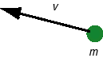
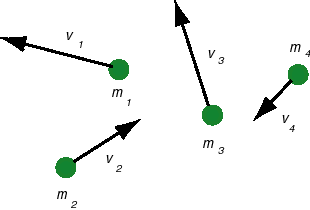

Kinetic energy is a scalar quantity. Historically, there was a lot of uncertainty about what quantity would measure the 'amount of motion' of a body. There was debate about whether to choose something that we now call 'momentum', which is proportional to the first power of speed, or something like what we now call 'kinetic energy', which is proportional to the second power of speed. Momentum, as it is defined now, is a vector quantity, but kinetic energy (and any other form of energy as well), is a scalar quantity. By definition, kinetic energy does not have a direction.
Definition 1. The kinetic energy of a point particle is defined as follows.

The kinetic energy K of a particle of mass m and speed v is given byK = (m/2) v2.
Definition 2. The kinetic energy of a system of point particles is defined as follows.

The kinetic energy K of a system of particles of masses m1, m2, ..., and speeds v1, v2, ..., respectively, is given byK = (m1/2) v12 + (m2/2) v22 + ... .
Go on to Page 2 for expressions of the kinetic energy of a rigid body in translational or rotational motion.